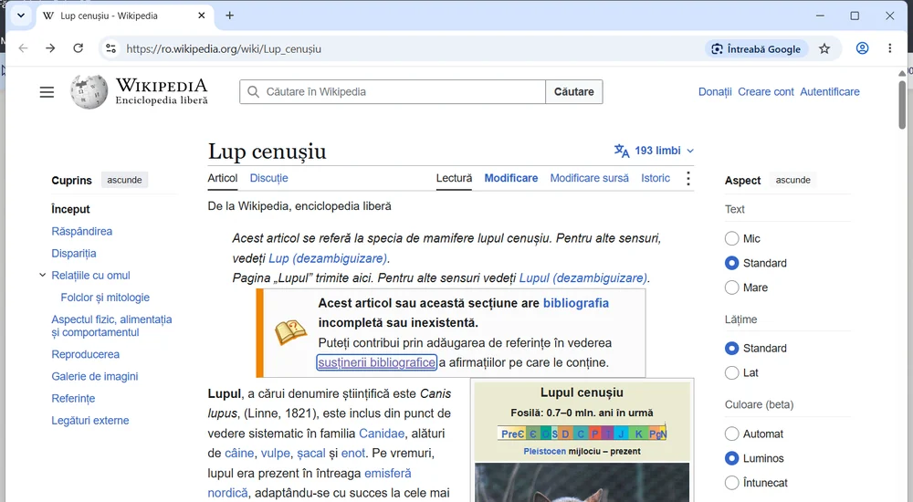
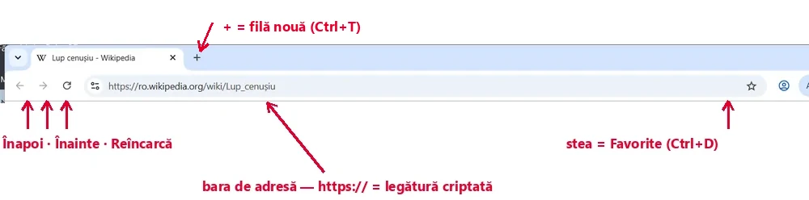
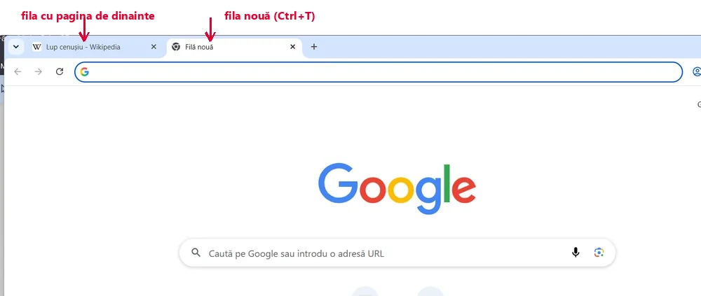
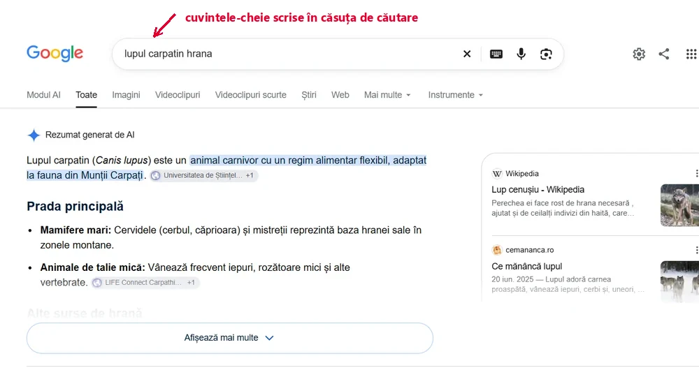
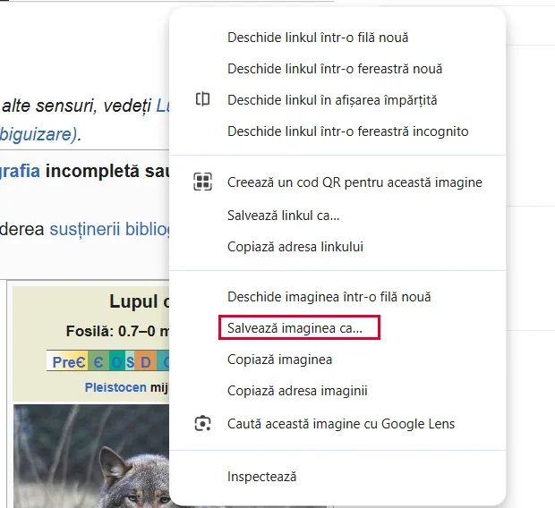
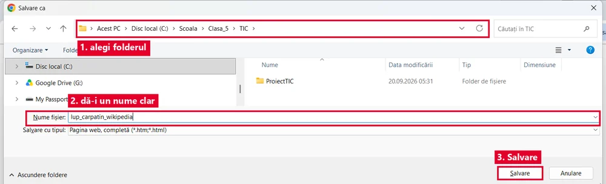
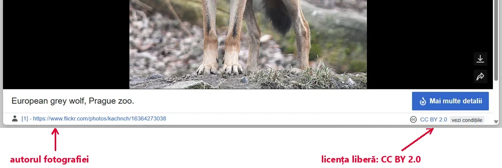
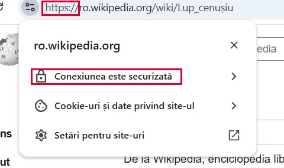
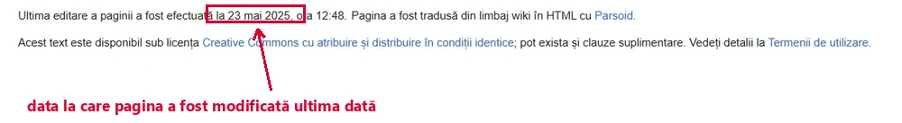
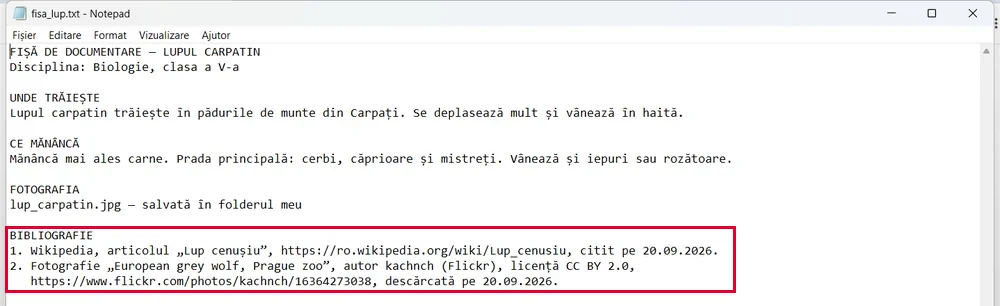

<!doctype html>
<html lang="ro">
<head>
<meta charset="utf-8">
<meta name="viewport" content="width=device-width, initial-scale=1, viewport-fit=cover">
<title>Misiunea Documentare</title>
<meta name="description" content="Lecție-joc pentru clasa a V-a: serviciile Internetului, navigarea, căutarea cu motoare de căutare, salvarea informațiilor, drepturile de autor și credibilitatea surselor.">
<link rel="preconnect" href="https://fonts.googleapis.com">
<link rel="preconnect" href="https://fonts.gstatic.com" crossorigin>
<link rel="stylesheet" href="https://fonts.googleapis.com/css2?family=Bree+Serif&family=PT+Sans:ital,wght@0,400;0,700;1,400&family=Ubuntu+Mono:wght@400;700&display=swap&subset=latin-ext">
<link rel="stylesheet" href="../_motor/motor.css">
<style>
:root{
  --desk:#ECF1EF; --paper:#FFFFFF; --paper2:#EEF5F3; --line:#CFDDD9;
  --ink:#16292A; --ink2:#53686A; --accent:#136B66; --accentInk:#FFFFFF; --sel:#D5ECE8;
  --mark:#FFE08A; --markInk:#16292A; --ok:#23784A; --okbg:#E0F2E7; --bad:#BA3A2F; --badbg:#FBE6E3;
  --fd:"Bree Serif",Georgia,serif; --fb:"PT Sans","Segoe UI",system-ui,sans-serif; --fm:"Ubuntu Mono",Consolas,monospace;
  --card:#F7F1E3; --cardInk:#5B4A2A;
}
@media (prefers-color-scheme:dark){:root:not([data-theme="light"]){
  --desk:#0F1716; --paper:#172221; --paper2:#1F2D2B; --line:#2E403D;
  --ink:#E4EFED; --ink2:#9FB5B2; --accent:#62CFC5; --accentInk:#0F1716; --sel:#1F4541;
  --mark:#EDCB63; --markInk:#16292A; --ok:#6CCF96; --okbg:#173020; --bad:#FF877B; --badbg:#3A1E1B;
  --card:#2A2619; --cardInk:#E2D3AE;
}}
:root[data-theme="dark"]{
  --desk:#0F1716; --paper:#172221; --paper2:#1F2D2B; --line:#2E403D;
  --ink:#E4EFED; --ink2:#9FB5B2; --accent:#62CFC5; --accentInk:#0F1716; --sel:#1F4541;
  --mark:#EDCB63; --markInk:#16292A; --ok:#6CCF96; --okbg:#173020; --bad:#FF877B; --badbg:#3A1E1B;
  --card:#2A2619; --cardInk:#E2D3AE;
}
/* tema jocului: caseta unui motor de căutare + fișa de bibliotecă pe care se notează sursa */
.banda{display:flex;align-items:center;gap:10px;padding:7px 12px;white-space:nowrap;overflow:hidden}
.cauta{flex:1 1 auto;min-width:0;display:flex;align-items:center;gap:8px;background:var(--paper);border:1.5px solid var(--accent);border-radius:999px;padding:3px 12px;font-family:var(--fm);font-size:.78rem;color:var(--ink2);overflow:hidden;text-overflow:ellipsis}
.cauta b{color:var(--ink);font-weight:700}
.lupa{flex:none;position:relative;width:9px;height:9px;border:2px solid var(--accent);border-radius:50%;margin-right:3px}
.lupa::after{content:"";position:absolute;right:-5px;bottom:-4px;width:6px;height:2px;background:var(--accent);transform:rotate(45deg)}
.fisa{flex:none;font-family:var(--fm);font-size:.66rem;letter-spacing:.04em;color:var(--cardInk);background:var(--card);border:1px solid var(--line);border-top:3px solid var(--accent);padding:1px 8px;border-radius:2px}
h1 .ghil{color:var(--accent)}
.hunt{font-size:1rem}
.hunt .tk{text-align:left}
</style>
</head>
<body>
<script src="../_motor/motor.js"></script>
<script src="../_ghiduri/cont-drive/pasi.js"></script>
<script src="../_ghiduri/docs/pasi.js"></script>
<script>
const LEVELS=[
{t:'Ce servicii are Internetul',lectii:[13],continuturi:['Servicii ale rețelei Internet'],text:`
<p><mark>Internetul</mark> este o rețea uriașă. Leagă calculatoare, tablete și telefoane din toată lumea.</p>
<p>Pe această rețea funcționează mai multe <mark>servicii</mark>. Fiecare te ajută la altceva:</p>
<ul>
<li><strong>World Wide Web</strong> (pe scurt, web): paginile și site-urile pe care le citești;</li>
<li><strong>poșta electronică</strong> (e-mail): trimiți un mesaj la o adresă, ca o scrisoare;</li>
<li><strong>mesageria instantanee</strong>: vorbești pe loc, în scris sau prin apel video;</li>
<li><strong>stocarea fișierelor în cloud</strong>: îți păstrezi fișierele pe un server și le poți da altora;</li>
<li><strong>streamingul</strong>: asculți muzică sau vezi un film fără să-l descarci întâi.</li>
</ul>
<p>Atenție: <mark>Internetul și web-ul nu sunt același lucru.</mark> Web-ul este doar unul dintre serviciile Internetului.</p>
<figure class="captura"><a href="../documentare-v/img/pagina-web.webp" target="_blank"></a>
<figcaption>Serviciul <b>World Wide Web</b>, așa cum se vede: o pagină deschisă în browser. E-mailul, mesageria, cloudul și streamingul merg pe aceeași rețea, dar arată altfel.</figcaption></figure>`,
qs:[
 {t:'tf',q:'Internetul și World Wide Web-ul sunt două nume pentru același lucru.',ok:false,why:'Fals. Internetul este rețeaua care leagă dispozitivele. Web-ul este un serviciu care folosește această rețea, la fel ca e-mailul sau mesageria.'},
 {t:'match',q:'Leagă fiecare serviciu de ce faci cu el.',pairs:[['World Wide Web','citești pagini și site-uri'],['Poșta electronică','trimiți un mesaj la o adresă de e-mail'],['Mesageria instantanee','vorbești pe loc, în scris sau video'],['Streamingul','vezi un film fără să-l descarci întâi'],['Stocarea în cloud','îți păstrezi fișierele pe un server']],why:'Fiecare serviciu răspunde unei nevoi din viața de zi cu zi: să afli ceva, să trimiți o scrisoare, să vorbești, să privești, să păstrezi.'},
 {t:'classify',q:'Ce serviciu folosește fiecare?',cats:['Web','E-mail','Mesagerie instantanee'],items:[['Ioana citește pe site-ul unui muzeu despre dinozauri',0],['Profesorul trimite tema la adresa de e-mail a clasei',1],['Radu vorbește video cu bunica',2],['Maria caută programul bibliotecii pe site-ul ei',0],['Mama primește o factură ca atașament la adresa ei',1],['Doi colegi își scriu pe loc în chat',2]],why:'Pagini și site-uri = web. Un mesaj trimis la o adresă de e-mail = poștă electronică. O conversație pe loc = mesagerie instantanee.'},
 {t:'choice',q:'Vrei să vezi un documentar fără să aștepți să se descarce tot filmul. Ce serviciu folosești?',o:['Streamingul','Poșta electronică','Mesageria instantanee'],ok:0,why:'La streaming, filmul sosește bucată cu bucată și îl vezi în timp ce restul încă vine. Nu trebuie să aștepți tot fișierul.'},
 {t:'choice',q:'Fără ce nu poate funcționa niciunul dintre aceste servicii?',o:['Fără o conexiune la Internet','Fără un cont de e-mail','Fără un motor de căutare','Fără o imprimantă'],ok:0,why:'Toate serviciile circulă prin rețea, deci au nevoie de conexiune. Poți citi o pagină web și fără cont de e-mail sau fără să cauți ceva.'}
]},
{t:'Navighez pe web',lectii:[14],continuturi:['Serviciul World Wide Web:','- navigarea pe Internet;'],text:`
<p>Paginile web le deschizi cu un <mark>browser</mark> (se citește „brauzer”). Exemple: Google Chrome, Microsoft Edge, Mozilla Firefox.</p>
<p>Fiecare pagină are o <mark>adresă web</mark>, de exemplu <code>https://www.exemplu.ro/animale</code>. O scrii în <strong>bara de adresă</strong>, sus, și apeși <kbd>Enter</kbd>.</p>
<p>Un <mark>link</mark> (legătură) e un text sau o imagine pe care dai clic ca să ajungi la altă pagină. Butonul <strong>Înapoi</strong> te duce la pagina de dinainte.</p>
<p>Vrei două pagini deschise deodată? Deschizi o <mark>filă nouă</mark> (tab) cu <kbd>Ctrl</kbd>+<kbd>T</kbd>. Adresa unei pagini bune o păstrezi la <strong>Favorite</strong> (marcaje), cu <kbd>Ctrl</kbd>+<kbd>D</kbd>.</p>
<figure class="captura"><a href="../documentare-v/img/bara-browser.webp" target="_blank"></a>
<figcaption>Bara de sus a browserului: <b>Înapoi</b>, <b>Înainte</b>, <b>Reîncarcă</b>, bara de adresă și steaua de la <b>Favorite</b>.</figcaption></figure>
<figure class="captura"><a href="../documentare-v/img/fila-noua.webp" target="_blank"></a>
<figcaption>După <kbd>Ctrl</kbd>+<kbd>T</kbd>: pagina veche rămâne în fila ei, iar fila nouă e goală.</figcaption></figure>`,
qs:[
 {t:'choice',q:'Care dintre acestea este un browser?',o:['Mozilla Firefox','Wikipedia','Windows','YouTube'],ok:0,why:'Browserul este programul cu care deschizi paginile web. Wikipedia și YouTube sunt site-uri pe care le deschizi în browser. Windows este sistemul de operare.'},
 {t:'match',q:'Leagă fiecare element al browserului de rolul lui.',pairs:[['Bara de adresă','aici scrii adresa paginii'],['Linkul','dai clic și ajungi la altă pagină'],['Butonul Înapoi','revii la pagina de dinainte'],['Fila (tab-ul)','ține încă o pagină deschisă în aceeași fereastră']],why:'Cu aceste patru elemente navighezi: mergi la o adresă, sari din pagină în pagină, te întorci și ții mai multe pagini la îndemână.'},
 {t:'choice',q:'Vrei să ții deschisă pagina cu tema și să deschizi alături un dicționar. Ce apeși?',o:['Ctrl+T','Ctrl+D','Ctrl+W'],ok:0,why:'Ctrl+T deschide o filă nouă, iar pagina cu tema rămâne în fila ei. Ctrl+D pune pagina la Favorite, iar Ctrl+W închide fila în care ești.'},
 {t:'order',q:'Pune în ordine pașii ca să deschizi o pagină după adresa ei.',items:['Deschizi browserul','Dai clic în bara de adresă','Scrii adresa paginii','Apeși Enter'],why:'Întâi ai nevoie de program, apoi de locul în care scrii. Enter trimite adresa, iar browserul aduce pagina.'},
 {t:'tf',q:'Când pui o pagină la Favorite, tot conținutul ei se păstrează pe calculator și îl poți citi și fără Internet.',ok:false,why:'Fals. La Favorite se păstrează doar adresa paginii, ca s-o găsești repede. Ca s-o citești, ai nevoie tot de Internet.'}
]},
{t:'Caut ca un detectiv',lectii:[14],continuturi:['- căutarea informațiilor pe Internet utilizând motoare de căutare;'],text:`
<p>Nu știi adresa? Folosești un <mark>motor de căutare</mark>, de exemplu Google, Bing sau DuckDuckGo. Motorul de căutare este un site. Browserul este programul în care îl deschizi.</p>
<p>Scrii câteva <mark>cuvinte-cheie</mark>, nu o propoziție lungă. De exemplu: <code>lupul carpatin hrană</code>.</p>
<p>Două trucuri care merg în Google:</p>
<ul>
<li><strong>ghilimelele</strong> caută exact expresia: <code>"Ștefan cel Mare"</code>;</li>
<li><strong>minusul</strong> scoate un cuvânt: <code>jaguar -mașină</code> caută animalul, nu mașina.</li>
</ul>
<p>Primele rezultate nu sunt mereu cele mai bune. Unele sunt <mark>reclame</mark>, marcate de obicei cu „Sponsorizat”. Citește titlul și adresa înainte să dai clic.</p>
<figure class="captura"><a href="../documentare-v/img/cautare-rezultate.webp" target="_blank"></a>
<figcaption>Două-trei <b>cuvinte-cheie</b> în căsuță, nu o propoziție. Sub ele vin rezultatele; citește titlul și adresa înainte să dai clic.</figcaption></figure>`,
qs:[
 {t:'tf',q:'Chrome și Google sunt același lucru.',ok:false,why:'Fals. Chrome este un browser, adică un program. Google este un motor de căutare, adică un site. Poți deschide Google și în Firefox, iar în Chrome poți căuta și cu Bing.'},
 {t:'classify',q:'Browser sau motor de căutare?',cats:['Browser','Motor de căutare'],items:[['Google Chrome',0],['Mozilla Firefox',0],['Microsoft Edge',0],['Bing',1],['DuckDuckGo',1],['Google (site-ul de căutare)',1]],why:'Browserul este programul care afișează paginile. Motorul de căutare este un site pe care îl deschizi în browser și care îți găsește pagini.'},
 {t:'choice',q:'Vrei să afli ce mănâncă ariciul. Care căutare e cea mai bună?',o:['arici hrană','Bună ziua, aș vrea să știu și eu ce mănâncă un arici','animale','arici'],ok:0,why:'Două cuvinte-cheie spun exact ce cauți. Propoziția lungă adaugă cuvinte inutile, iar „animale” sau doar „arici” aduc prea multe rezultate care nu răspund la întrebare.'},
 {t:'choice',q:'Cauți versul „Somnoroase păsărele” exact cu aceste cuvinte, în această ordine. Ce scrii?',o:['"Somnoroase păsărele"','Somnoroase -păsărele','somnoroase păsărele păsărele','-"Somnoroase păsărele"'],ok:0,why:'Ghilimelele cer expresia exactă. Minusul ar scoate din rezultate tocmai cuvintele pe care le cauți.'},
 {t:'tf',q:'Rezultatele marcate „Sponsorizat” sunt puse sus pentru că sunt cele mai corecte.',ok:false,why:'Fals. Sunt reclame: cineva a plătit ca pagina lui să apară acolo. Asta nu spune nimic despre cât de corectă e informația.'}
]},
{t:'Salvez ce am găsit',lectii:[15],continuturi:['- salvarea informațiilor de pe Internet'],text:`
<p>Ai găsit ce-ți trebuie? Acum <mark>salvezi</mark>, ca să nu pierzi:</p>
<ul>
<li><strong>un text:</strong> îl selectezi, îl copiezi cu <kbd>Ctrl</kbd>+<kbd>C</kbd> și îl lipești cu <kbd>Ctrl</kbd>+<kbd>V</kbd> într-un document;</li>
<li><strong>o imagine:</strong> clic dreapta pe ea și alegi comanda de salvare a imaginii (în engleză, <em>Save image as…</em>);</li>
<li><strong>toată pagina:</strong> <kbd>Ctrl</kbd>+<kbd>S</kbd>.</li>
</ul>
<p>Fișierele descărcate ajung, de obicei, în folderul <mark>Descărcări</mark> (<em>Downloads</em>). Mută-le în folderul tău și dă-le un nume clar, de exemplu <code>lup_hrana.jpg</code>.</p>
<p>Lângă fiecare informație salvată notezi <mark>sursa</mark>: adresa paginii și data. Altfel nu mai știi de unde ai luat-o.</p>
<figure class="captura"><a href="../documentare-v/img/salvez-imaginea.webp" target="_blank"></a>
<figcaption>Clic dreapta pe imagine → <b>Salvează imaginea ca…</b> (în engleză, <i>Save image as…</i>).</figcaption></figure>
<figure class="captura"><a href="../documentare-v/img/caseta-salvare.webp" target="_blank"></a>
<figcaption>După <kbd>Ctrl</kbd>+<kbd>S</kbd> se deschide caseta <b>Salvare ca</b>: <b>1</b> alegi folderul, <b>2</b> scrii un nume clar, <b>3</b> apeși Salvare.</figcaption></figure>`,
qs:[
 {t:'choice',q:'Vrei să păstrezi o fotografie cu un lup de pe o pagină. Ce faci?',o:['Clic dreapta pe ea și aleg salvarea imaginii','Apăs Ctrl+D și pun pagina la Favorite','Apăs Ctrl+T și deschid o filă nouă','Închid pagina, poza rămâne în browser'],ok:0,why:'Comanda de salvare din meniul de clic dreapta pune imaginea într-un fișier pe calculator. Favoritele păstrează doar adresa, iar o filă nouă nu salvează nimic.'},
 {t:'match',q:'Leagă fiecare scurtătură de ce face în browser.',pairs:[['Ctrl+C','copiezi textul selectat'],['Ctrl+V','lipești textul în document'],['Ctrl+S','salvezi toată pagina'],['Ctrl+D','pui adresa paginii la Favorite']],why:'Copierea și lipirea mută textul în documentul tău. Ctrl+S face un fișier cu pagina. Ctrl+D doar ține minte adresa.'},
 {t:'choice',q:'Unde ajunge, de obicei, un fișier descărcat din browser?',o:['În folderul Descărcări (Downloads)','Pe Desktop, întotdeauna','În Coșul de reciclare','În folderul Imagini, întotdeauna'],ok:0,why:'Browserele pun descărcările în folderul Descărcări, dacă nu ai schimbat setările. De acolo le muți tu în folderul proiectului.'},
 {t:'classify',q:'Ce notezi lângă o informație salvată pentru referat?',cats:['Notez','Nu e nevoie'],items:[['Adresa paginii',0],['Data la care am citit-o',0],['Numele autorului, dacă apare',0],['Culoarea fundalului paginii',1],['Câte reclame avea pagina',1]],why:'Adresa, data și autorul te duc înapoi la sursă și arată cui îi aparține informația. Culoarea sau reclamele nu ajută pe nimeni să găsească sursa.'},
 {t:'tf',q:'Un nume ca „imagine(3).jpg” e la fel de bun ca „lup_hrana.jpg”, fiindcă fișierul e același.',ok:false,why:'Fals. Peste o săptămână, „imagine(3)” nu-ți mai spune nimic. Un nume clar te ajută să găsești fișierul fără să le deschizi pe toate.'}
]},
{t:'Drepturile de autor',lectii:[15],continuturi:['Drepturi de autor'],text:`
<p>Orice text, fotografie, desen, cântec sau film are un <mark>autor</mark>. În România, Legea nr. 8/1996 îi dă acestuia <mark>drepturi de autor</mark>. Ele apar singure, din clipa în care opera e creată. Nu e nevoie de semnul ©.</p>
<p>Dacă o imagine se vede pe Internet, asta <strong>nu</strong> înseamnă că e liberă. Într-o temă poți cita un fragment scurt, dacă scrii <mark>sursa</mark>: autorul și locul de unde l-ai luat.</p>
<p>Unii autori dau singuri voie, printr-o <mark>licență liberă</mark>, de exemplu Creative Commons. De obicei, condiția e să le scrii numele.</p>
<p>Să iei textul sau ideile altcuiva fără să spui de unde sunt, ca și cum ar fi ale tale, se numește <mark>plagiat</mark>.</p>
<figure class="captura"><a href="../documentare-v/img/licenta-imagine.webp" target="_blank"></a>
<figcaption>O fotografie cu <b>licență liberă</b>: sub ea scrie cine a făcut-o și ce licență are (aici <b>CC BY 2.0</b>). Condiția obișnuită: scrii numele autorului.</figcaption></figure>`,
qs:[
 {t:'tf',q:'O fotografie găsită pe Internet e liberă: o pot folosi oricum, fiindcă oricine o poate vedea.',ok:false,why:'Fals. Fotografia are un autor și este protejată, chiar dacă oricine o poate vedea. O folosești doar dacă autorul permite, de exemplu printr-o licență liberă, și îi scrii numele.'},
 {t:'tf',q:'O poezie nouă e protejată de drepturile de autor doar dacă autorul a pus lângă ea semnul ©.',ok:false,why:'Fals. Protecția apare singură, din clipa în care opera e creată. Semnul © doar amintește că există drepturi.'},
 {t:'classify',q:'E în regulă sau nu, într-un proiect pentru școală?',cats:['În regulă','Nu e în regulă'],items:[['Citez două rânduri dintr-un articol și scriu autorul și adresa',0],['Folosesc o imagine cu licență liberă și scriu numele autorului',0],['Desenez eu ilustrația pentru afiș',0],['Copiez tot articolul și îmi pun numele pe el',1],['Folosesc o fotografie de pe Internet fără să scriu de unde e',1]],why:'Citatul scurt cu sursă, licența respectată și munca ta proprie sunt în regulă. Să iei lucrarea altcuiva ca pe a ta sau fără sursă nu e.'},
 {t:'choice',q:'Cum se numește prezentarea textului altcuiva ca fiind al tău, fără să spui de unde e?',o:['Plagiat','Citat','Licență liberă','Descărcare'],ok:0,why:'Citatul arată clar cine a scris textul. Plagiatul ascunde asta. Diferența stă în sursa scrisă sau nescrisă.'},
 {t:'hunt',q:'Referatul lui Vlad are 3 greșeli legate de drepturile de autor. Apasă pe ele.',src:'Am luat [[tot textul unui articol|se citează doar un fragment scurt, nu tot articolul]] despre lupi și am scris pe prima pagină [[că eu sunt autorul lui|autorul e cel care a scris textul; tu ești autorul doar al părților scrise de tine]]. Fotografia cu lupul are licență liberă și am scris sub ea numele fotografului. La final [[n-am trecut sursele, erau prea multe|fiecare sursă se trece, cu autorul și adresa paginii]].',indiciu:'Uită-te la cât a luat, al cui e textul și la surse.',why:'Fotografia e folosită corect: licență liberă și numele autorului. Textul, în schimb, e luat întreg, fără sursă și cu alt autor.'}
]},
{t:'Pot avea încredere?',lectii:[16],continuturi:['Siguranța pe Internet'],text:`
<p>Pe Internet oricine poate publica, deci nu tot ce scrie e adevărat. Verifică dacă pagina e <mark>credibilă</mark>:</p>
<ul>
<li><strong>Cine a scris?</strong> Un autor cu nume, un muzeu, o instituție?</li>
<li><strong>Când?</strong> Pagina are o dată?</li>
<li><strong>De ce?</strong> Te informează sau vrea să-ți vândă ceva?</li>
<li><strong>Mai spune cineva la fel?</strong> Compară <mark>două-trei surse</mark>.</li>
</ul>
<p>O adresă care începe cu <code>https</code> (în unele browsere apare și un lacăt lângă ea) arată doar că legătura e <mark>criptată</mark>. Nu arată că informația e adevărată.</p>
<p>Nu dai <mark>date personale</mark> (adresa, telefonul, parola). Nu descarci nimic fără acordul unui adult. Ceva te sperie sau te supără? Spui imediat unui părinte sau profesorului.</p>
<figure class="captura"><a href="../documentare-v/img/lacat-https.webp" target="_blank"></a>
<figcaption>Adresa începe cu <b>https</b>, iar panoul din bara de adresă arată lacătul: <b>Conexiunea este securizată</b>. Atât — nu spune că informația e adevărată.</figcaption></figure>
<figure class="captura"><a href="../documentare-v/img/data-si-sursa.webp" target="_blank"></a>
<figcaption>În subsolul paginii scrie <b>când</b> a fost modificată ultima dată. Dedesubt, aceeași dată mărită: <b>23 mai 2025</b>. O pagină fără autor și fără dată e semn de atenție.</figcaption></figure>`,
qs:[
 {t:'tf',q:'Dacă adresa paginii începe cu https, tot ce scrie pe pagină e adevărat.',ok:false,why:'Fals. https arată doar că datele circulă criptate între tine și site. Și o pagină cu informații greșite poate avea https.'},
 {t:'classify',q:'Semn de pagină credibilă sau semn de atenție?',cats:['Pagină credibilă','Semn de atenție'],items:[['Autorul are nume și e specialist',0],['Pagina are data publicării',0],['Aceeași informație apare și pe site-ul unui muzeu',0],['Titlu: „INCREDIBIL! Nu vei crede ce au descoperit!”',1],['Nu are autor și nici dată',1],['Te grăbește să cumperi un produs',1]],why:'Autorul, data și confirmarea din altă sursă arată grijă pentru adevăr. Titlurile care strigă, lipsa autorului și grabă de a vinde sunt semne că pagina vrea altceva decât să te informeze.'},
 {t:'choice',q:'Două pagini spun cifre diferite despre câți lupi trăiesc în România. Ce faci?',o:['Caut o a treia sursă de încredere','Aleg pagina cu mai multe poze','Aleg pagina care a apărut prima','Scriu cifra care îmi place mai mult'],ok:0,why:'Când sursele nu se potrivesc, o sursă sigură în plus (un muzeu, o instituție) ajută să afli cifra corectă. Dacă tot nu te lămurești, întrebi profesorul.'},
 {t:'choice',q:'Un joc online îți cere adresa de acasă ca să-ți „trimită un premiu”. Ce faci?',o:['Nu o dau și spun unui părinte','O dau, e doar un joc','O dau, dar fără numărul casei','O scriu în chat, nu în formular'],ok:0,why:'Adresa de acasă este o dată personală. Un „premiu” este o momeală des folosită. Un părinte te ajută să verifici dacă e ceva adevărat.'},
 {t:'match',q:'Leagă fiecare întrebare de verificare de ce afli din ea.',pairs:[['Cine a scris?','dacă autorul se pricepe la subiect'],['Când?','dacă informația e recentă'],['De ce?','dacă pagina informează sau vinde'],['Mai spune cineva la fel?','dacă informația e confirmată']],why:'Patru întrebări scurte, puse la fiecare pagină, te feresc de cele mai multe informații greșite.'}
]},
{t:'Fișa despre lupul carpatin',final:true,lectii:[14,15,16],continuturi:['- căutarea informațiilor pe Internet utilizând motoare de căutare;','- salvarea informațiilor de pe Internet','Drepturi de autor','Siguranța pe Internet'],text:`
<p><strong>Misiunea finală.</strong> La biologie faci o fișă despre <mark>lupul carpatin</mark>: ce mănâncă, unde trăiește și o fotografie.</p>
<p>Cauți pe Internet. Alegi pagini credibile și compari ce spun. Salvezi în folderul tău ce e util, cu nume clare.</p>
<p>Fotografia trebuie să aibă voie să fie folosită. La final scrii <mark>bibliografia</mark>: lista surselor, fiecare cu autorul, titlul paginii, adresa și data.</p>
<p>Tot ce ai învățat în joc intră acum într-o singură lucrare.</p>
<figure class="captura"><a href="../documentare-v/img/fisa-bibliografie.webp" target="_blank"></a>
<figcaption>Fișa terminată: sub text, <b>bibliografia</b> — fiecare sursă cu autorul, titlul, adresa și data.</figcaption></figure>`,
qs:[
 {t:'choice',q:'Ce scrii în motorul de căutare pentru partea despre hrană?',o:['lupul carpatin hrană','vreau o fișă despre lupi la biologie','lup','-lupul carpatin hrană'],ok:0,why:'Cuvintele-cheie spun exact ce cauți. Propoziția are cuvinte inutile, „lup” e prea larg, iar minusul ar scoate din rezultate chiar cuvântul „lupul”.'},
 {t:'order',q:'Pune în ordine pașii documentării.',items:['Caut cu cuvinte-cheie','Deschid 2-3 pagini credibile din rezultate','Salvez în folderul meu ce am găsit util','Scriu bibliografia la finalul fișei'],why:'Întâi găsești, apoi alegi ce e de încredere, apoi păstrezi, iar la final arăți de unde ai luat totul.'},
 {t:'classify',q:'Ce păstrezi pentru fișă?',cats:['Păstrez','Las deoparte'],items:[['Textul de pe site-ul unui muzeu, cu autor și dată',0],['O fotografie cu licență liberă, cu numele fotografului',0],['Un articol dintr-o revistă științifică pentru copii',0],['Un comentariu fără nume: „lupii mănâncă doar iarbă”',1],['O imagine dintr-o reclamă, fără autor',1]],why:'Păstrezi ce are autor cunoscut și ai voie să folosești. Comentariul anonim e și greșit (lupul mănâncă mai ales carne), iar imaginea din reclamă nu are voie de folosire.'},
 {t:'hunt',q:'Bibliografia lui Andrei are 3 greșeli. Apasă pe ele.',src:'Surse: 1. [[Google|Google e motorul de căutare, nu sursa; se trece pagina pe care ai citit]]. 2. Muzeul Exemplu de Istorie Naturală, pagina „Lupul”, www.muzeu-exemplu.ro/lupul, citită pe 12.01.2027. 3. [[de pe net|„de pe net” nu spune nimic; se trece adresa exactă a paginii]]. 4. Fotografie de A. Pop, licență liberă, [[fără adresă|și la fotografie se trece pagina de unde ai luat-o]].',indiciu:'Fiecare sursă trebuie să poată fi găsită din nou.',why:'O sursă bună are autorul, titlul, adresa și data. Cine citește fișa trebuie să poată ajunge la aceeași pagină.'},
 {t:'tf',q:'Un site cu articole despre animale îți cere parola contului tău de e-mail ca să vezi articolul complet. E sigur să o scrii.',ok:false,why:'Fals. Parola contului tău nu se dă altui site. Cere ajutorul unui adult și caută altă sursă.'}
]}
];

JocMotor.porneste({
  cheie:'joc_documentare_v',
  ghiduri:['cont-drive','docs'],
  titlu:'Misiunea Documentare',
  marca:'Misiunea <b>Documentare</b>',
  h1:'Misiunea Documentare<span class="ghil">”</span>',
  clasa:'a V-a',
  unitate:'V-U3',
  unitateTitlu:'Internetul ca sursă de documentare',
  competente:['CS.1.3'],
  lectii:'13–16',
  intro:'Șapte niveluri despre Internet ca sursă de documentare: servicii, navigare, căutare, salvare, drepturi de autor și surse de încredere. La fiecare nivel citești o pagină scurtă și răspunzi la întrebări. La final faci o fișă despre lupul carpatin și îți iei diploma.',
  banda:'<span class="cauta"><span class="lupa"></span><b>lupul carpatin</b> hrană</span><span class="fisa">SURSA: autor · adresă · dată</span>',
  nivele:LEVELS,
  diploma:{
    titlu:'Detectiv de informații',
    rezumat:'servicii ale Internetului, navigarea pe web, căutarea cu cuvinte-cheie, salvarea textelor și imaginilor, drepturile de autor și surse de încredere',
    aplicatie:'browserul de pe calculatorul din laborator',
    provocare:[
      'Alege un animal din România și caută cu un motor de căutare, folosind 2-3 cuvinte-cheie, ce mănâncă și unde trăiește.',
      'Deschide cel puțin două pagini credibile și compară ce spun.',
      'Copiază un fragment scurt într-un document și scrie sub el sursa: autorul, adresa paginii și data.',
      'Salvează o imagine cu licență liberă în folderul tău, cu un nume clar, și scrie sub ea numele autorului.',
      'Arată-i profesorului documentul și bibliografia.'
    ]
  }
});
</script>
</body>
</html>
